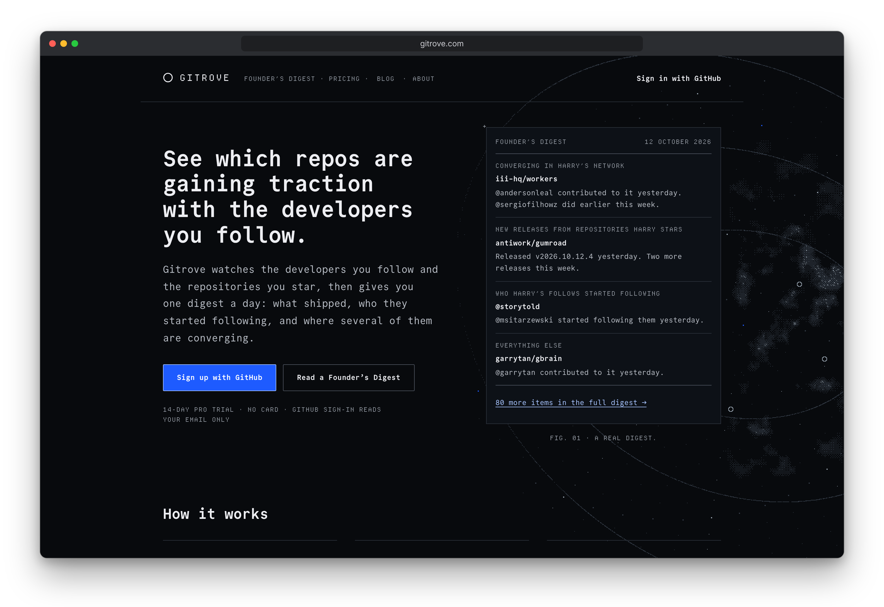

gitrove
Daily discoveries from your GitHub network.
gitrove watches the developers you follow and the repositories you star. Once a day, it sends a digest of the discoveries, releases, and connections worth a closer look.
Built with Go, PostgreSQL, and a server-rendered TypeScript frontend.
